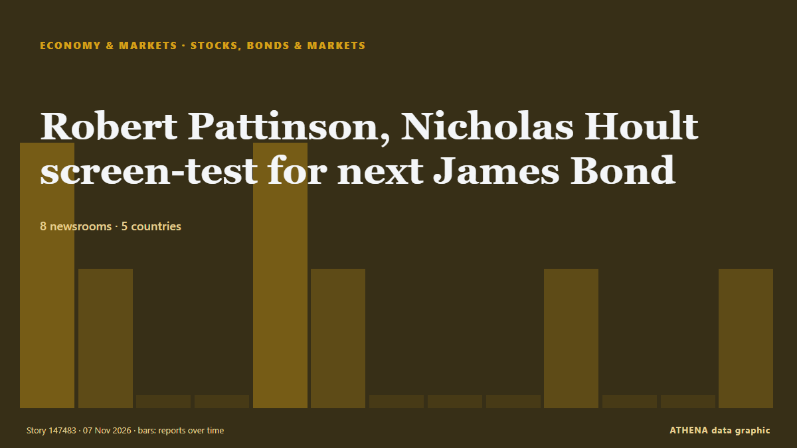

Actions, obligations et marchés
SponsoriséPrésenté par  Cybernetics and Artificial Intelligence Lab Welcome to the Cybernetics and Artificial Intelligence Laboratory, established at the Department of Business Administration of the National and Kapodistrian University of Athens. The lab is headed by Professor Dimitrios Thomakos. The lab aims to do research that can be published in top venues. Our research uses tools and methods of Artificial Intelligence, and lies in the following areas: - Forecasting - Decision making - Cyber security - Finance We are always looking forward to collaborating with exceptional students!
Cybernetics and Artificial Intelligence Lab Welcome to the Cybernetics and Artificial Intelligence Laboratory, established at the Department of Business Administration of the National and Kapodistrian University of Athens. The lab is headed by Professor Dimitrios Thomakos. The lab aims to do research that can be published in top venues. Our research uses tools and methods of Artificial Intelligence, and lies in the following areas: - Forecasting - Decision making - Cyber security - Finance We are always looking forward to collaborating with exceptional students!
| 25 oct. | 0 |
|---|---|
| 26 oct. | 1 |
| 27 oct. | 0 |
| 28 oct. | 0 |
| 29 oct. | 0 |
| 30 oct. | 1 |
| 31 oct. | 0 |
| 1 nov. | 0 |
| 2 nov. | 2 |
| 3 nov. | 1 |
| 4 nov. | 7 |
| 5 nov. | 6 |
| 6 nov. | 5 |
| 7 nov. | 1 |
Les titres sont affichés en anglais, tels que publiés.

Robert Pattinson, Nicholas Hoult screen-test for next James Bond
The A-list star, already juggling the Batman franchise, teamed with Bond director Denis Villeneuve on the upcoming third 'Dune' movie. de The Hollywood Reporter
Seoul stocks crash for 2nd day on AI rout after US midterms
Seoul stocks sank for the second consecutive session on Friday amid fears that a Democratic Congress could decelerate the pace of data center construction for artificial intelligence. de Korea Herald
Trump blames Democrats winning midterms for US stocks fall
US President Donald Trump attributed Thursday's stock market freefall to the electoral victory of his rival Democratic Party in midterm elections earlier this week. de Prothom Alo (English)
Nasdaq posts biggest daily drop in 19 months on fears of AI regulations
Democratic victories on Tuesday raised concerns that tighter regulations could slow AI infrastructure expansion, which has helped drive stocks to record highs this year, amid growing opposition to… de Free Malaysia Today
Seoul stocks open sharply lower on AI fears after US midterms
Seoul stocks opened sharply lower Friday, tracking an overnight rout on Wall Street as investors feared a Democratic sweep in Congress could decelerate the data center build-out. de The Korea Times
Mining giants weigh down ASX; Trump lashes out after Wall Street’s $4.6 trillion wipeout
The Australian sharemarket has slumped at the open after a brutal selloff swept through Wall Street, led by stocks tied to the buildout of AI data centres. de Sydney Morning Herald
OpenAI will be ready for an IPO in 2027, says Greg Brockman
OpenAI will be ready to go public in 2027, president Greg Brockman said on Wednesday. de The Next Web
Nasdaq plunges into correction territory
CNBC reports: The Nasdaq Composite plummeted on Thursday, erasing the sharp gains from the previous session, as investors accelerated their move away from technology stocks in the wake of the U.S.… de The Loadstar
Gathering AI storm clouds doom tech stocks to darkest day in a year
Big tech stocks slumped Thursday, putting them on track for their biggest decline since the "Liberation Day" rout last year, the most significant shakeout yet in what has been a punishing autumn for… de The Korea Times
Wall Street slumps as sharp tech losses put Nasdaq on course for correction
This comes after a rally in the last session on the back of Democrats’ sweeping midterm election victory. de The Business Times
Gold hits a two-week high as dollar, Treasury yields ease after US midterm elections
US gold futures for December delivery climbed 1.8% to US$4,144.20. de The Business Times
Pierce Brosnan Endorses Callum Turner As Next James Bond As “He’s So Strong”; Josh O’Connor Reacts To Talk Around 007 Casting
Two names rumored to take on the James Bond role next are Callum Turner and Josh O’Connor, and reactions to the idea of them playing 007 on the big screen are coming in. de Deadline
US midterms live: Stocks climb as Democrats take control of Congress
HONG KONG: Asian stocks fell with the dollar Wednesday, with the Democrats enjoying big early gains in the US midterms as they look to take control of both houses of Congress, which analysts said… de New Straits Times
Global stocks rebound, dollar and oil fall after Democrats' election victory
Global markets rally as European shares hit two-month highs, US bond yields fall and currencies from Mexico to Canada gain. de TRT World
Gold, silver prices surge as US dollar drops after midterm elections
Bullion reclaims $4,000-per-ounce threshold while silver climbs toward $52 amid falling Treasury yields, greenback weakness. de Anadolu Agency (English)
Stocks surge, and the Dow soars 1,500 points as oil prices tumble following the US midterm elections
U.S. stocks soared Wednesday after President Donald Trump's party lost its sole control of Washington in the midterm elections.Stocks. de Mainichi (English)
Warm ocean temperatures threaten Tuna industry
The Pacific’s tuna industry could face annual losses of almost $210 million as rising ocean temperatures threaten the movement of tuna stocks across the region. de FBC News
Global markets slide as Democratic gains in US midterms rattle investors
Deutsche Bank notes that Democratic gains in Congress have weighed on US equity futures, particularly technology stocks, amid concerns over tighter AI regulation. de FXStreet